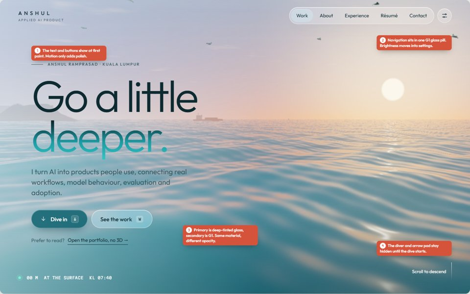
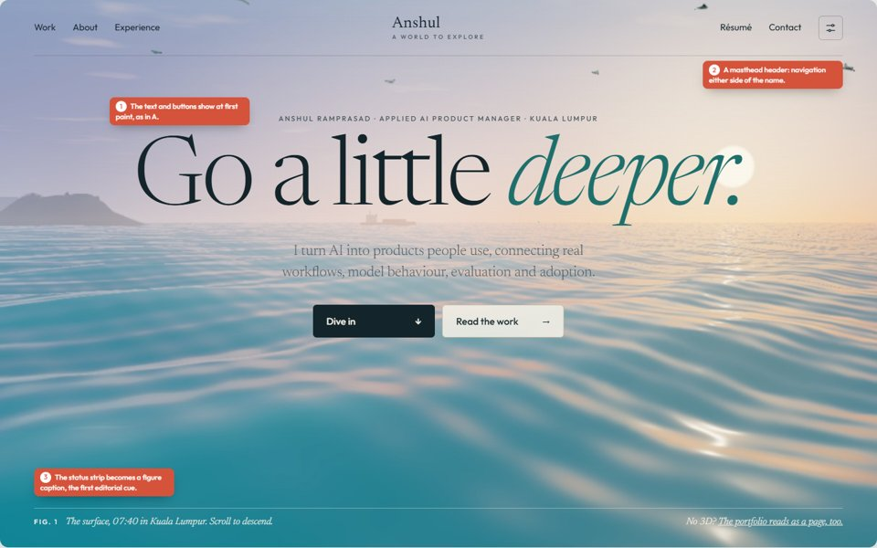

Both boards use the same structural fixes: text and buttons at first paint, real navigation, a calm HUD, simpler logbook paging, a cover for every project, and an at-a-glance project layout. They differ in look. Pick one, or name the parts of each you want to combine.

Chosen. Outfit with Martian Mono. Tinted glass throughout, with tiers set by hue and opacity, in day and night themes. The reading site's scroll is a descent.

Newsreader with Outfit. Paper and ink everywhere, like a field journal. Paper labels in the water, the logbook as a magazine article, and the reading site as a contents page.
| A · Depth | B · Light editorial | |
|---|---|---|
| Feels like | Immersive and premium, a product-studio feel | Thoughtful and literary, a writer's portfolio |
| Underwater UI | Dark glass blends into the water and keeps immersion | Paper chips stay readable but sit on top of the scene |
| Reading site | The colour shift ties it strongly to the ocean | Very calm and the most readable; the ocean appears only in images |
| Fonts to self-host | Outfit (already hosted) plus Martian Mono | Newsreader plus Outfit (already hosted) |
| Build effort | Medium: reuses the current dark archive structure | Medium to high: the archive and HUD need a full restyle |
| Risk | Contrast at mid-depths needs care (checked on the token ramp) | Light panels over bright water can glare on the surface |